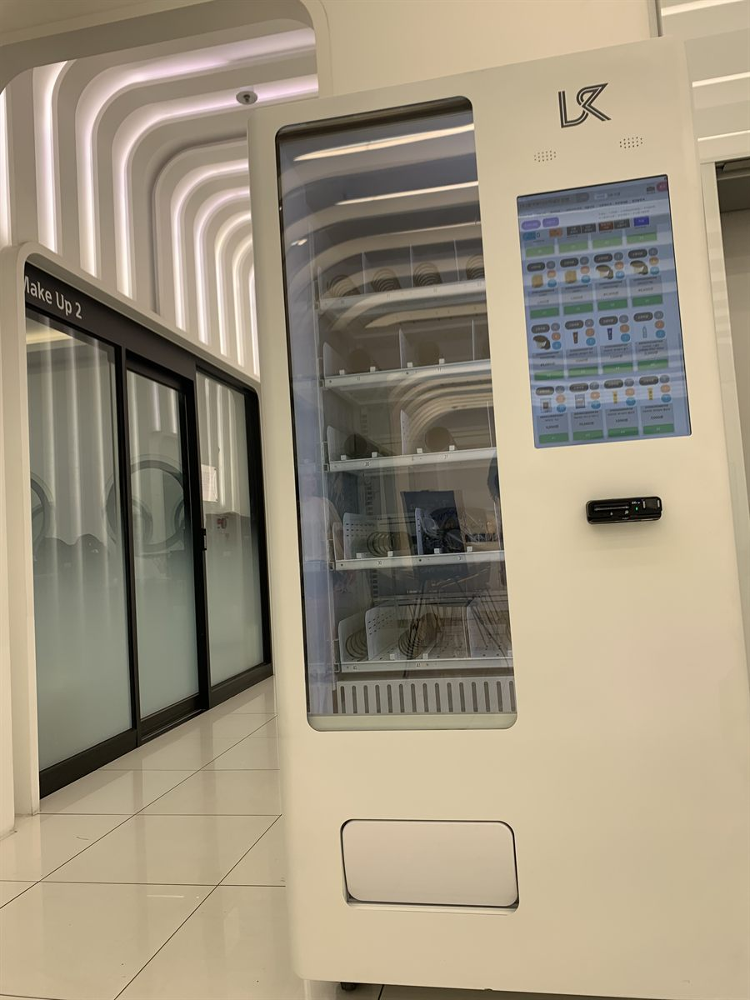

동작구 무인자판기 설치
학원 복도 자투리 공간 냉장 자판기

학원은 다른 업종과 시간의 성질이 다릅니다. 하루 종일 사람이 조금씩 드나드는 것이 아니라, 수업이 끝나는 몇 분 동안에만 복도가 꽉 찹니다. 그 10분이 지나면 다시 조용해지고, 다음 쉬는 시간까지 아무도 지나가지 않습니다. 이번 동작구 현장에서 저희가 가장 먼저 확인한 것도 기계 자리가 아니라 시간표였습니다. 몇 개 반이 동시에 끝나는지에 따라 필요한 대수와 칸 구성이 달라지기 때문입니다.
자리를 볼 때는 복도를 두 번 걸어 봤습니다. 한 번은 빈 복도를, 한 번은 수업이 끝난 직후를 봤습니다. 학원에서 흔히 나오는 실수가 강의실 문 바로 앞에 기계를 두는 것인데, 그러면 나오는 사람과 사는 사람이 같은 자리에서 엉킵니다. 이 건물은 복도가 끝나는 벽면이 비어 있었고, 옆이 유리 파티션이라 기계를 붙여도 통행 폭이 줄지 않았습니다. 결국 이 자리로 정했습니다.
동작구 학원에 맞춘 구성
학원에서는 고르는 시간이 곧 대기 줄입니다. 그래서 품목 수를 늘리기보다 잘 나갈 품목을 눈높이 칸에 몰아 두는 쪽으로 맞췄습니다. 생수와 이온음료를 가장 손이 먼저 가는 줄에 두고, 캔커피와 에너지 음료를 그 옆에 붙였습니다. 늦은 시간 수업이 있는 학원이라 카페인 음료가 꾸준히 나가는 편입니다. 간식은 소리가 크게 나지 않고 부스러기가 덜 떨어지는 품목 위주로 넣었습니다. 봉지를 뜯는 소리가 옆 강의실까지 들어가면 학원 입장에서는 그게 민원이 됩니다.
결제는 카드와 간편결제만 열었습니다. 현금을 쓰지 않으니 거스름돈 때문에 줄이 서는 일이 없고, 관리자가 동전을 채우러 올 필요도 없습니다. 재고와 내부 온도는 휴대폰으로 확인되기 때문에, 어느 칸이 비었는지 보고 보충 날짜를 잡으면 됩니다. 학원 직원이 따로 관리에 손을 대지 않아도 되는 구조로 잡았습니다.
- 기종 — 냉장 복합 기종 한 대, 복도 끝 벽면에 밀착 설치
- 음료 — 생수·이온음료를 눈높이 칸에, 캔커피·에너지 음료를 그 옆에
- 간식 — 소리와 부스러기가 적은 개별 포장 위주
- 결제·관리 — 카드·간편결제만(현금 미사용), 재고·온도 원격 확인
학원에 넣어 보니 달랐던 점
좋은 쪽부터 말씀드리면, 학생이 건물 밖으로 나가지 않습니다. 쉬는 시간에 편의점을 다녀오면 다음 수업에 늦는데, 복도에서 해결되면 그 문제가 사라집니다. 학원 입장에서는 지각이 줄고, 원생 입장에서는 시간이 남습니다. 자리도 새로 만들 필요가 없었습니다. 어차피 비어 있던 복도 끝 벽면이라 임대 면적을 따로 쓰지 않았고, 전기는 가까운 공용 콘센트에서 끌어 하루 안에 끝났습니다.
대신 미리 알고 시작하셔야 할 것도 있습니다. 첫째, 매출이 시간대에 완전히 몰립니다. 하루 대부분은 아무 일도 일어나지 않고 쉬는 시간에만 팔리기 때문에, 방학이나 휴강 주간에는 눈에 띄게 줄어듭니다. 이걸 모르고 보면 기계가 고장 난 줄 아십니다. 둘째, 보충 시점을 잘못 잡으면 정작 필요한 시간에 비어 있습니다. 수업 시간대를 피해 채워야 해서 방문 시간이 자유롭지 않습니다. 셋째, 냉장 기종은 압축기가 도는 소리가 납니다. 강의실 벽을 맞대고 있는 자리라면 한 칸 떨어뜨리는 편이 낫고, 저희도 그 이유로 문 앞자리를 피했습니다.
동작구, 이런 자리가 잘 됩니다
동작구는 학원과 대학, 고시 수요가 한 구 안에 다 있는 동네입니다. 노량진동은 오래된 학원가라 강의실과 독서실, 스터디카페가 한 블록에 몰려 있고, 사당동은 여러 노선이 겹치는 자리라 직장인 대상 학원이 늘어서 있습니다. 흑석동은 중앙대학교, 상도동은 숭실대학교 주변으로 학생 생활권이 이어지고, 대방동과 신대방동은 주거지와 사무실이 섞여 있습니다. 동작동과 본동은 대로변 뒤쪽으로 조용한 주거지가 붙어 있는 형태입니다.
학원이 아니어도 사람이 한 건물에 오래 머무르면서 나가기는 번거로운 자리면 조건이 비슷합니다. 독서실과 스터디카페, 대학 건물 휴게 공간, 학원 건물 안의 공용 라운지가 그렇습니다. 반대로 1층에 편의점이 있거나, 정문 바로 앞에 가게가 붙어 있는 건물은 권하지 않습니다. 걸어서 30초면 되는 자리에서는 자판기를 쓸 이유가 없습니다.
동작구 서비스 지역
노량진동 · 상도동 · 흑석동 · 사당동 · 대방동 · 신대방동 · 동작동 · 본동
동작구 전역에서 방문 상담이 가능합니다. 맞닿은 관악구·영등포구·서초구·용산구도 같은 담당자가 함께 다닙니다. 지역별 안내는 동작구 무인자판기 설치 안내 페이지에서 보실 수 있습니다.
동작구 무인자판기, 이렇게 시작하시면 됩니다
전화나 상담 신청으로 건물 주소만 남겨 주시면 됩니다. 담당자가 나가서 복도 폭, 벽면이 비어 있는 길이, 콘센트까지의 거리, 강의실과의 거리를 확인합니다. 수업 시간표를 같이 보여 주시면 대수와 칸 구성을 더 정확히 잡을 수 있습니다. 기종과 품목을 정하고 설치일을 잡으면 끝이며, 설치비는 받지 않습니다. 기계는 구입·렌탈·임대 중에서 고르실 수 있어 초기 비용 없이 시작하셔도 됩니다.
복도가 좁아 통행에 걸리거나, 강의실 문과 너무 가깝거나, 방학에 건물이 아예 비는 구조라면 그 자리에서 솔직히 말씀드립니다. 학원은 자리보다 시간표가 결과를 더 크게 가르는 업종이라, 처음에 그것부터 맞춰 보는 편이 빠릅니다.
※ 사진은 픽프리가 시공한 설치 사례이며, 글에 적힌 지역의 현장 사진은 아닙니다.
함께 많이 찾는 키워드
동작구 무인자판기 · 동작구 자판기 설치 · 동작구 자판기 임대 · 동작구 자판기 렌탈 · 서울 무인자판기 · 서울 자판기 설치 · 노량진 자판기 · 상도동 자판기 · 흑석동 자판기 · 사당동 자판기 · 대방동 자판기 · 신대방동 자판기 · 동작동 자판기 · 본동 자판기 · 학원 자판기 · 학원 음료 자판기 · 독서실 자판기 · 스터디카페 자판기 · 대학교 자판기 · 복도 자판기 설치 · 냉장 자판기 · 생수 자판기 · 음료 자판기 · 스낵 자판기 · 무인키오스크 설치 · 스마트 자판기 · 카드 자판기 · 자판기 설치비용 · 자판기 원격관리